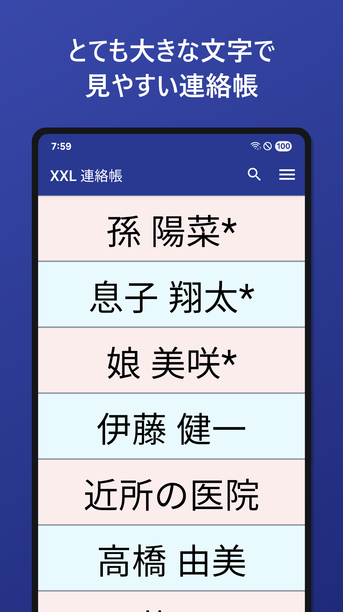
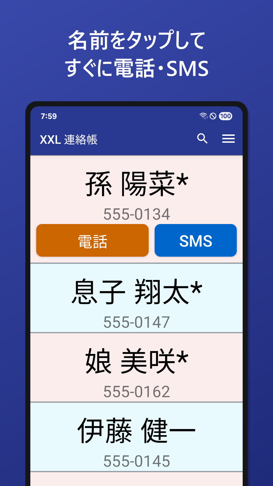
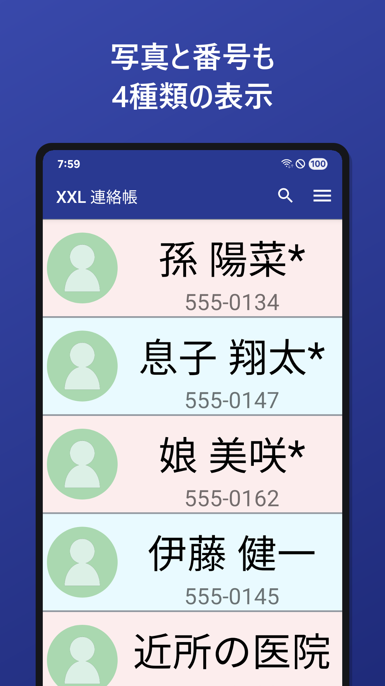
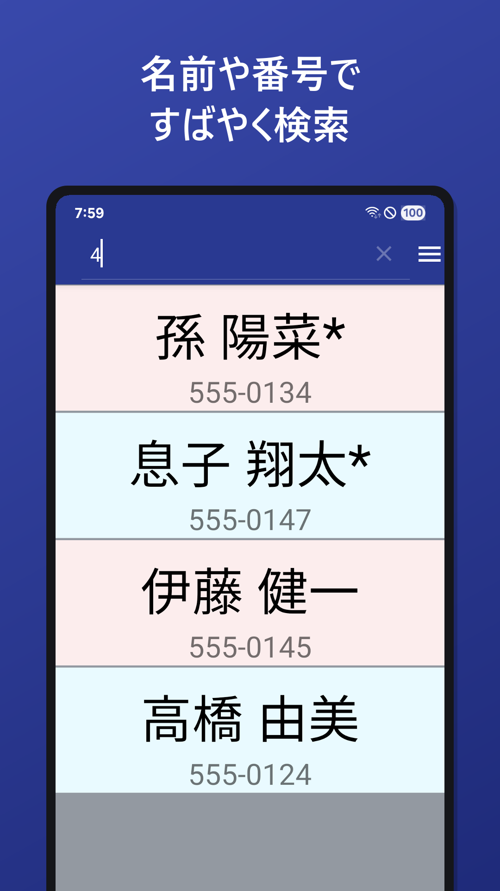
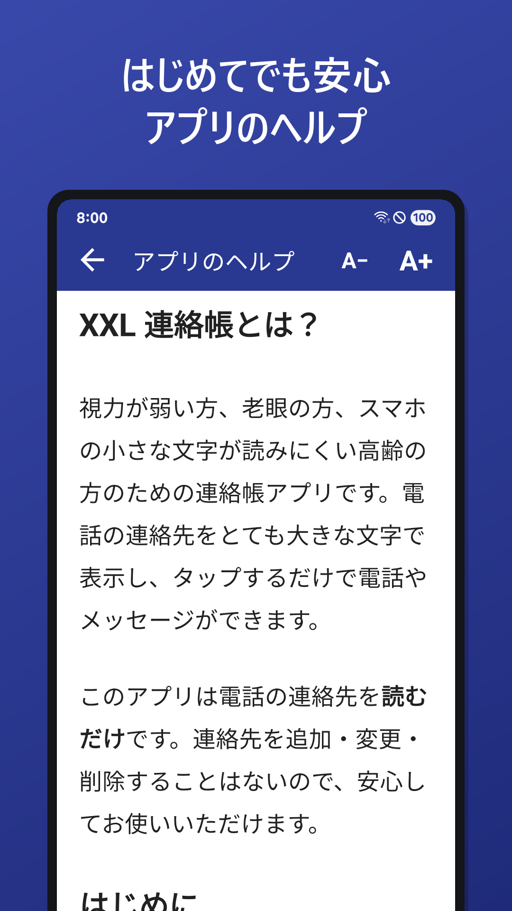

スマホの小さな文字で、電話をかけるのが大変ではありませんか？
XXL 連絡帳は、視力が弱い方、老眼の方、高齢の方のための連絡帳アプリです。電話の連絡先をとても大きな文字で表示し、名前をタップするだけで電話やメッセージができます。
とても大きな文字
- 連絡先の名前を画面いっぱいの大きな文字で表示します。
- 文字の大きさは8段階。メニュー (☰) の「文字を大きく / 文字を小さく」で一段ずつ変えられます。
- 端末の文字サイズ設定に関係なく、このアプリで選んだ大きさで表示します。
- 選んだ文字の大きさと表示は、次にアプリを開いたときもそのままです。
タップしてすぐ電話・SMS
- 名前をタップすると、大きな「電話」と「SMS」のボタンが出ます。
- 「電話」をタップすると、番号が入った電話の画面が開きます。発信ボタンをもう一度押して初めてかかるので、まちがい電話を防げます。
4つの表示
- 名前だけ / 名前 + 番号 / 写真 + 名前 / 写真 + 名前 + 番号
- 連絡先の写真は丸く表示します。
かんたんに探せる
- スター付きの家族や知り合いがいちばん上に、ほかの人は名前の順に並びます。
- 虫めがねをタップして、名前や番号の一部ですばやく探せます。
はじめてでもかんたん
- はじめて開いたときに連絡先へのアクセスを許可すると、すぐに連絡先を読み込みます。
- メニューの「アプリのヘルプ」で、使い方を大きな文字でくわしく見られます。ヘルプの文字も A− / A+ で大きくできます。
10の言語
- 日本語、英語、韓国語、中国語（簡体字）、スペイン語、ドイツ語、フランス語、ロシア語、ヒンディー語、アラビア語に対応。
- 端末の言語に合わせて表示し、メニューの「言語 (Language)」でこのアプリだけ別の言語にすることもできます。
安心して使えます
- 電話の連絡先を読むだけで、追加・変更・削除はしません。
- インターネットの権限がないので、連絡先をどこにも送りません。
- 広告はありません。
- 必要な権限は「連絡先」ひとつだけです。
ご注意
- 電話の連絡先に番号を保存したり変更したりしたあとは、メニューの「電話の連絡先を読み込む」をタップしてください。
ご両親のスマホに入れておけば、大きな文字で家族に気軽に電話できます。
Google Playで入手（無料）